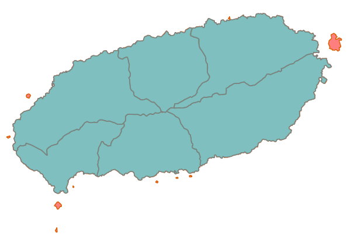

폴리곤 파트 제거¶
멀티파트 폴리곤에서 설정된 면적 기준으로 폴리곤의 파트(Part)를 제거합니다.
Syntax
RemoveParts (SimpleFeatureCollection inputFeatures, Expression minimumArea) : SimpleFeatureCollection
Input Parameters
Identifier |
Description |
Type |
Default |
Required |
inputFeatures |
멀티폴리곤의 파트를 제거할 폴리곤 레이어입니다. |
SimpleFeatureCollection |
✓ |
|
minimumArea |
이 표현식의 값보다 작은 면적의 폴리곤은 삭제합니다. 예) 10.0 또는 면적을 나타내는 필터 표현식. |
Expression |
0.0 |
Process Outputs
Identifier |
Description |
Type |
Default |
Required |
result |
출력 레이어입니다. |
SimpleFeatureCollection |
✓ |
Constraints
minimumArea는 숫자 또는 필드값 등을 조합하여 숫자를 반환하는 Expression이 가능하다.
minimumArea 파라미터의 값이 0이면 MultiPolygon을 구성하는 Exterior Ring 중 가장 큰 Ring만 남기고 모두 삭제되고, 0보다 크면 해당 값보다 면적이 작은 Ring만 삭제된다.
Examples
MultiPolygon에서 특정 면적 이하의 멀티파트 폴리곤을 제거한 예입니다. 그림에서와 같이 면적이 작은 섬들이 모두 제거되었습니다.
